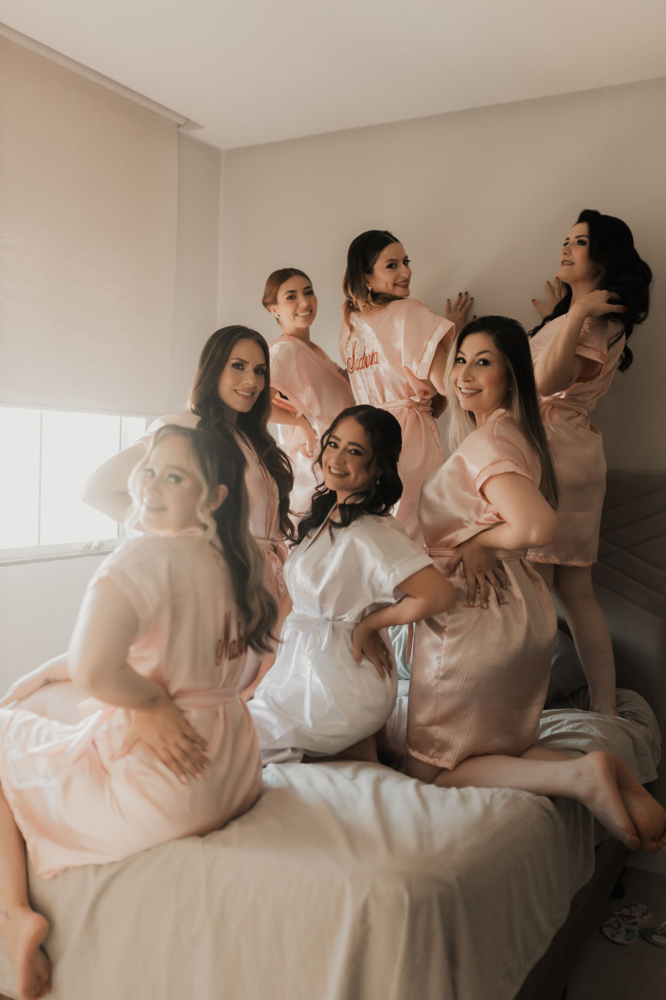
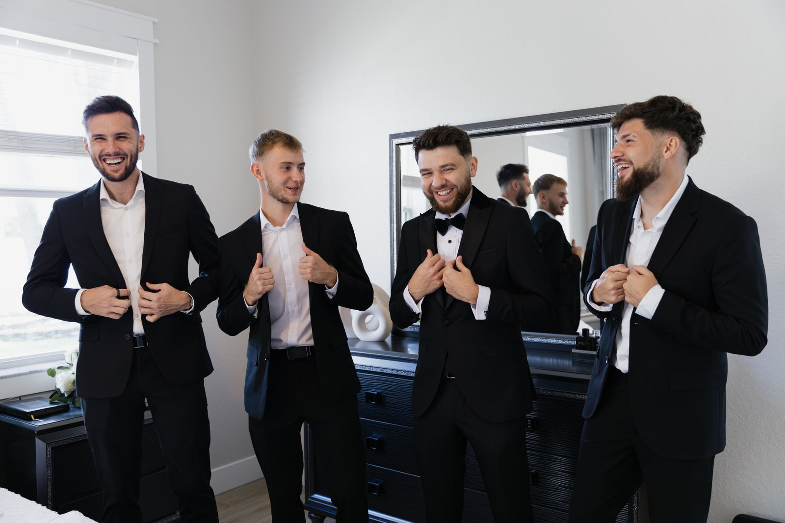

First up
Welcome toast at The Elysian Bar
Saturday027:00 PM
View the full weekend ↓
New Orleans · October 2–4, 2027
Everything Bea and Milo’s favorite people need for one unforgettable wedding weekend—beautifully together and easy to find.
First up

Wedding-day transportation now leaves each getting-ready location 15 minutes earlier. The schedule below is current.
Updated Sep. 18The weekend
This is the wedding-party version—just the moments and arrival times that matter to you.
Saturday · Everyone
Join whenever you arrive. A reserved courtyard area and first round will be waiting.
Open map ↗Sunday · Wedding party
A relaxed ceremony walk-through followed by dinner nearby. Transportation is not needed.
Open map ↗Sunday · Wedding party + family
Dinner begins promptly at 6:30. Partners named on the invitation are warmly included.
Open map ↗Monday · Bridesmaids
Arrive with clean, dry hair and a fresh face. Breakfast, coffee, and lunch are provided.
Your room details ↓Monday · Groomsmen
Monday · Everyone
Wedding party and immediate family should arrive photo-ready. Please keep phones and bags with the host.
Open map ↗Monday · The reason we’re here
Lineup begins at 4:40. Second line, dinner, and dancing follow immediately after the ceremony.
Add to calendar ↗
Getting ready
Hair and makeup stations, breakfast, lunch, robes, steamers, and sparkling water will be ready.
Lunch, music, garment steamers, boutonnières, and a quiet room for last-minute toast practice will be ready.

The look
Bea and Milo chose rich color, clean tailoring, and details that feel a little unexpected.
Your chosen dress, nude or metallic shoes, and simple gold jewelry. Bouquets are provided.
White shirt, black bow tie, black shoes and socks. Boutonnières and pocket squares are provided.
Deep jewel tones, champagne, and black are lovely inspiration—not a requirement.
Ceremony lineup
Meet the ceremony host at 4:35 p.m. Phones, bags, and drinks stay in the green room.
Who to call
Bea and Milo are officially off duty. These fictional demo contacts have the answers.
Maid of honor · morning details
Best man · transportation help
Demo wedding concierge
Lost item, wardrobe fix, or quiet moment
All phone numbers are fictional and included for demonstration only.
A note from us
“The thing we want most is for you to be present. Eat the good food, dance badly, make a new friend, and remind us to take it all in.”
Love, Bea & Milo
Choose one for this sample vote.
Screenshot this
Audubon Cottage No. 4
Maison de la Luz
Do not miss your assigned car
Marigny Opera House courtyard
Phones and bags in green room
Second line follows
Last little things
To keep the rooms calm and comfortable, getting-ready spaces are reserved for the wedding party. Partners can join the welcome toast, rehearsal dinner if invited, and wedding festivities.
A labeled green-room shelf will be available at the venue. The room host can help secure personal items before photos.
Yes. Breakfast and lunch are provided in Bea’s room; lunch and snacks are provided in Milo’s room. Please share dietary needs in advance.
The wedding party leads a short second line through the Marigny, then returns to the venue for cocktails, dinner, and dancing.
Contact Nora, Theo, or the fictional demo concierge listed above—not Bea or Milo.